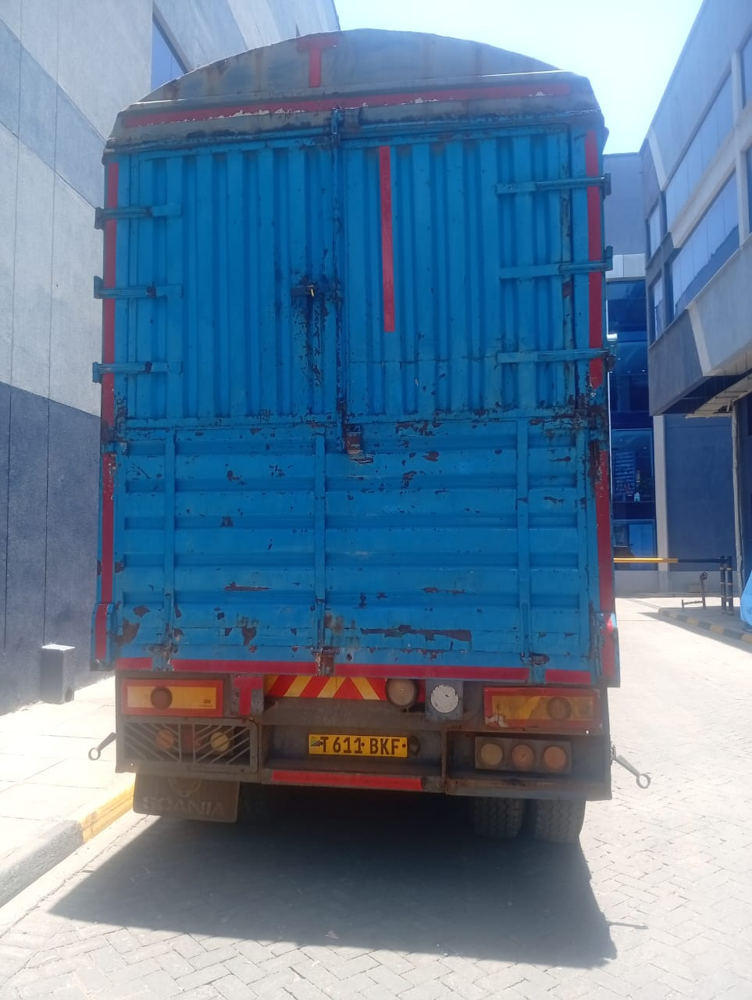

Our Logistics Gallery


Reliable Transport, Clearing & Logistics Solutions
EMA Kiarago Transport & Logistics Limited is a trusted provider of transport, clearing, and logistics services across Kenya and beyond. With over 10 years of experience, we specialize in both import and export services across East Africa and beyond, offering seamless logistics solutions to help your business thrive.
We are connected to all major borders in the region, including Malaba, Busia, and Namanga. We handle clearing across the African continent, ensuring your goods move seamlessly from one place to another.
📍 Address: Along Lungalunga Road, Next to House of Maji, Next to Shell Petrol Station, Nairobi, Kenya
Feel free to visit us or contact us for more information about our logistics services.
Job Gitonga Kiarago
Director
📞 0742 878 236
✉️ jobgitonga390@gmail.com
For inquiries, bookings, or consultations, please reach out to us via the contact details above. We look forward to serving your transport and logistics needs.